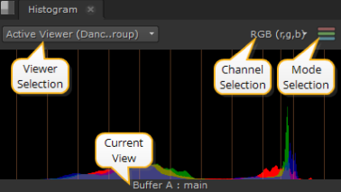
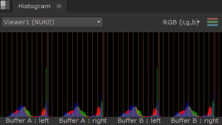
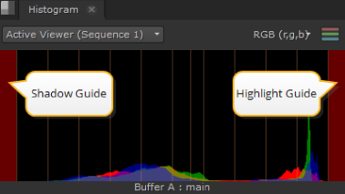

核武器 提供帮助您评估媒体的范围。有许多全球控制 ( 偏好 > 面板 > 范围 ) 影响范围显示信息的方式:
• 黑点 -设置黑色超出范围警告级别。
• 白点 -设置白色超出范围警告级别。
• 亮度/色度编码 -设置将 RGB 转换为范围显示中的亮度或色度值时使用的视频标准，或者 REC601 或 REC709 .
• 包括查看器颜色变换 -启用时，范围数据包括应用的查看器颜色变换 (增益、伽玛和 LUT)。禁用时，范围数据不包括应用的查看器颜色转换。这可能会减慢渲染速度，因为它可能需要图像计算。
• 力全框架 -启用时，范围将显示整个框架的数据，而不管该框架的哪一部分在查看器中显示。禁用时，范围仅显示查看器请求的当前区域的数据，而不是整个框架。
要打开范围，请导航到 窗口 > 新范围 并从列表中选择所需的范围。
的 柱状图 提供三色通道和亮度通道信息，描述红色、绿色、蓝色和亮度像素在当前帧中的分布。
柱状图显示每个亮度级别的像素数量，柱状图的区域从左到右表示阴影、中间色调和高光。

提示: 您可以通过按住来平移视图区域 Alt ,或鼠标中键，并在面板中拖动。
也有 观众 和 渠道 上的选择控件 柱状图 标签:
• 观众选择 -如果您打开了多个查看器，请使用下拉菜单将直方图输出与所需剪辑相关联。
默认值, 活动查看器 ,自动显示您选择的最后一个查看器的详细信息。
• 通道选择 -选择要输出的通道。默认设置显示 RGB，但也可以单独查看通道。
• 模式选择 -选择要输出的模式。默认设置显示混合 RGB，但您也可以单独查看通道。
• 当前视图 -描述当前显示在范围中的视图，无论是 A 或 B 缓冲区还是视图。视图默认为 主要 ,除非 主要 已在多视图脚本或项目中被替换。
根据您激活的查看器工具和视图，您可以同时显示最多四个范围。
例如，有两个立体声读取节点，每个输入缓冲区中有一个, 擦拭 和 Side by Side 活动时，范围显示如下所示:

示波器具有全局可定制指南，可帮助您查看剪辑。导航到 偏好 > 面板 > 范围 和输入值之间 0 和 1 对于 黑色 和 白色 点。请注意，这也设置了波形显示的值。
当分布超出范围时，柱状图边缘的参考线变为红色，警告您:

|
|